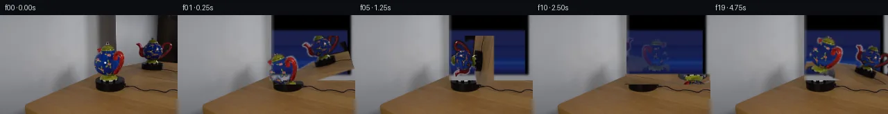

![首帧]()

Round 00
2026-11-06T01:40:58.332274+00:00像素候选变化代码 +372/−0inspection 更新
pixels d48714c69d74fee4 · code ac410f46d196c1c6
查看本轮 generate.py 真实 diff
--- previous/generate.py
+++ current/generate.py
@@ -0,0 +1,372 @@
+#!/usr/bin/env python3
+"""
+generate.py - PixelWorld-Text: Teapot Rotation on Platform with Mirror
+
+Generates 20 frames (256x144, 4fps, 5s) of a teapot rotating clockwise
+on a black platform in front of a mirror.
+Frame 00 is an exact copy of first_frame.png.
+
+Method:
+- Segment the teapot body from the background (wall + mirror + platform).
+- Build a clean background plate by extending the wall gradient and
+ synthesizing the mirror surface behind the teapot.
+- For each frame t>0, apply an affine rotation warp to the teapot body
+ around its base center, then composite onto the background.
+- The mirror reflection is updated by rendering a horizontally-flipped
+ rotated teapot into the mirror surface area, with a dark-blue glass tint.
+- Use OpenCV (cv2) for affine warping and numpy for pixel operations.
+"""
+
+import numpy as np
+from PIL import Image
+import cv2
+from scipy.ndimage import gaussian_filter1d, gaussian_filter
+from pathlib import Path
+import sys
+
+# Add artifact_io helpers
+sys.path.insert(0, str(Path(__file__).parent))
+from artifact_io import save
+
+CASE_DIR = Path(__file__).parent
+H, W = 144, 256
+N_FRAMES = 20
+
+# ============================================================
+# STEP 0: Load frame 00
+# ============================================================
+img = cv2.imread(str(CASE_DIR / 'first_frame.png'))
+img = cv2.cvtColor(img, cv2.COLOR_BGR2RGB)
+assert img.shape == (H, W, 3), f"Expected (144,256,3), got {img.shape}"
+img_f = img.astype(np.float64)
+r, g, b = img_f[:,:,0], img_f[:,:,1], img_f[:,:,2]
+
+# ============================================================
+# STEP 1: Identify scene regions
+# ============================================================
+
+# Mirror mask: blue-dominant pixels
+mirror_mask = (b > r + 15) & (b > g + 15) & (b > 20)
+
+# Wall mask: neutral grey (R≈G≈B)
+wall_mask = (np.abs(r - g) < 15) & (np.abs(r - b) < 20) & (np.abs(g - b) < 20) & (r > 50)
+
+# Very dark / black pixels (platform shadow, dark areas)
+dark_mask = (r < 18) & (g < 15) & (b < 18)
+
+# Teapot body region (warm brown/reddish)
+# Exclude wall, mirror, and pure dark
+teapot_warm = (r > g + 2) & (r > b + 3) & (r > 45) & ~wall_mask & ~mirror_mask
+
+# Combined teapot mask: includes warm teapot body, dark areas near teapot,
+# and transition pixels between mirror and teapot
+# Focus on the teapot body area: y=35-95, x=135-255
+yv, xv = np.mgrid[0:H, 0:W]
+teapot_region = (yv >= 35) & (yv <= 95) & (xv >= 135) & (xv <= 255)
+
+# Teapot mask within region: warm colors or near-warm
+teapot_mask = teapot_region & (teapot_warm |
+ ((r > g - 5) & (r > b - 5) & (r > 40) & ~wall_mask & ~mirror_mask & (b < 80)))
+
+# Also include dark pixels that are part of the teapot body (shadows on teapot)
+teapot_body_dark = teapot_region & dark_mask & (xv > 160) & (yv > 55)
+teapot_mask = teapot_mask | teapot_body_dark
+
+# Add the teapot lid area (y=35-41, narrow)
+teapot_lid = (yv >= 35) & (yv <= 41) & (xv >= 138) & (xv <= 170) & (r > 60) & ~wall_mask
+teapot_mask = teapot_mask | teapot_lid
+
+# Dilate slightly to capture edges
+kernel = np.ones((3,3), np.uint8)
+teapot_mask_u8 = teapot_mask.astype(np.uint8)
+teapot_mask_u8 = cv2.dilate(teapot_mask_u8, kernel, iterations=1)
+teapot_mask = teapot_mask_u8 > 0
+
+# Compute teapot bounding box
+teapot_ys, teapot_xs = np.where(teapot_mask)
+t_y0, t_y1 = teapot_ys.min(), teapot_ys.max()
… diff truncated; 285 more lines …